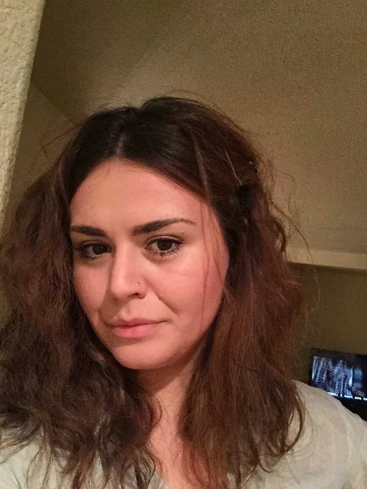

"The Struggle you're in today is developing the Strenght you need tomorrow"
Hi, i am Jovanka Nikolovski, currently a Devbootcamp student in Chicago IL, moved from Las Vegas NV, where i lived for about 7 years and worked in food and beverage industy.
Doing what i did had a chance to meet and work for a different celebrity chefs which led to a lot of fun and great expercience.
After i outgrew that lifestyle i was trying to switch careers and somehow i was always interested in IT. Once i moved to Chicago i got in touch with a dear friends of mine who are a software developers as well, to introduce me and help me to engage more into these waters and somehow my eyes sparked and open wide to the power of technology.
I think i totally found out i could do this, i loved what i worked on, and study so i could get ready for the interview to get accepted at DBC. So here i am still a student at DBC with a hope that one day i'll make a creative full stack software developer, and this page will include many more projects that i hopefully am going to work on!